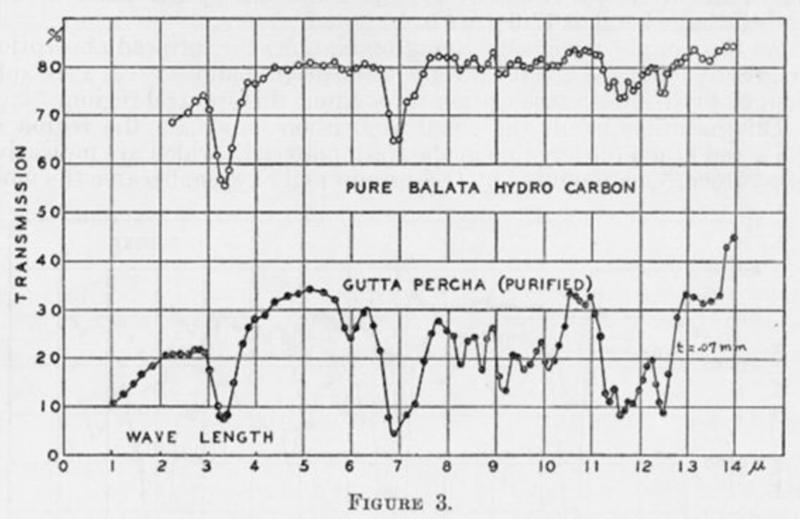

“Devvy, look what I got! A plantslator!” Romi deposited the canvas grocery bag by the fridge and proudly set the present on the faux-marble kitchen island.
A curated selection of creative responses to materials on the Doors site. We're all in this together; come read some thinking about things we could do with our futures.
All images were taken from National Institute of Standards and Technology Digital Collections, Gaithersburg, MD 2089

“Devvy, look what I got! A plantslator!” Romi deposited the canvas grocery bag by the fridge and proudly set the present on the faux-marble kitchen island.